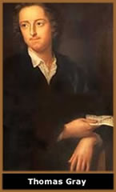

Gênero
poético que se caracteriza sobretudo pela
temática baseada na tristeza dos amores interrompidos.
Surgido na Grécia no século VII a.C.
Inicialmente definida pelo metro específico,
chamado metro elegíaco, a elegia passou a designar
um gênero poético que se caracterizou não
pela forma, mas pelo assunto: a tristeza dos amores interrompidos
pela infidelidade ou pela morte.
A elegia surgiu na Grécia antiga, com Calino
de Éfeso (século VII a.C.), Tirteu e Mimnermo. Seus
poemas eram cantos guerreiros que incitavam à luta. Calímaco,
importante poeta alexandrino do século III a.C., foi um
dos primeiros a escrever elegias no sentido moderno do termo,
ou seja, como poemas líricos e tristes. Sua elegia Os
cabelos de Berenice, da qual só restaram fragmentos,
constituiu o primeiro modelo do gênero.
Entre os romanos, o primeiro grande poeta elegíaco
foi Tibulo. Seus três livros sentimentais, muito lidos durante
a Idade Média, influenciaram fortemente os poetas da Renascença.
Foram preferidos às elegias de Propércio, que inauguraram
um subgênero, com poemas ardentemente eróticos. O
mais importante dos elegíacos romanos foi Ovídio:
os Poemas Tristes e as Cartas do Ponto, que
lamentavam o exílio, se aproximam bastante das elegias
modernas.
No século XVI, a elegia transformou-se num
dos gêneros poéticos mais cultivados, embora ainda
pouco definido. Em Portugal, o primeiro escritor de elegias foi
Sá de Miranda, mas Camões foi o principal: da edição
de 1595 de suas obras completas, constam quatro elegias, tidas
pelas melhores em língua portuguesa. Na França da
Renascença, destacou-se no gênero Pierre de Ronsard.
Na
poesia inglesa, a elegia apareceu com Astrophel, lamento
fúnebre de Edmund Spenser. Durante quase três séculos
produziram-se, dentro desse modelo, alguns dos maiores poemas
da literatura inglesa, como Lycidas,
de Milton (1638), Adonais,
de Shelley (1821),
sobre a morte de Keats, e muitas outras. Contudo, a mais famosa
elegia da língua inglesa foi Elegy
Written in a Country Churchyard (1751; Elegia escrita
num cemitério de aldeia), de Thomas Gray, meditação
sobre a morte de gente humilde e anônima e uma das obras
capitais do pré-romantismo europeu.
Em outras literaturas, a elegia assumiu características
pagãs, como as belas e eróticas Römische
Elegien (1797; Elegias Romanas), de Goethe,
obra-prima da literatura alemã. No século XX, a
obra mais importante no gênero foi sem dúvida Duineser
Elegien (1923; Elegias de Duíno), do poeta
alemão Rainer Maria Rilke. No Brasil, o mais importante
autor de elegias foi Fagundes
Varela, no século XIX. Destacaram-se ainda Cristiano
Martins, Vinícius de Moraes e Dantas Mota, no século
XX.
Encyclopaedia
Britannica do Brasil Publicações Ltda.